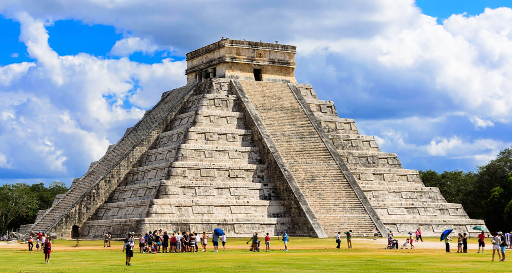

CHICHÉN ITZÁ

Chichén Itzá es un complejo de ruinas mayas famoso a nivel mundial en la península de Yucatán de México. Una enorme pirámide escalonada, conocida como El Castillo, domina los 6.5 km cuadrados de la ciudad antigua.